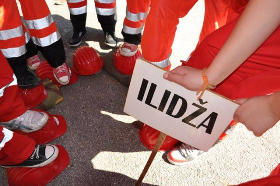
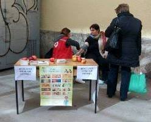
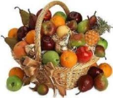

Crveni križ općine Ilidža
- Humanost
- Nepristrasnost
- Neutralnost
- Neovisnost
- Dobrovoljnost
- Jedinstvo
- Univerzalnost
Adresa: Jahijela Fincija 14.
Telefon: 033/638-022
Fax: 033/638-023
E-mail: ck_ilidza@hotmail.com
Općinsko takmičenje u pružanju prve pomoći
Objavio Jasmin Nikšić: 28. marta 2014. u 14:40

XX Općinsko takmičenje iz pružanja prve pomoći CKO Ilidža za učenike osnovnih i srednjih škola, održat će se 28.03.2015.godine u prostorijama i okruženju osnovne škole El-Manar na Ilidži sa početkom u 11 sati.
Detaljnije...
Obilježen Svjetski dan borbe protiv tuberkuloze
Objavila Aldijana Jašarević: 24. marta 2015. u 17:08

24.03. se obilježava kao Svjetski dan borbe protiv tuberkuloze. Tim povodom, danas su građani općine Ilidža mogli besplatno izmjeriti krvni pritisak i dobiti informacije o zaštiti od ove, teške, ali izlječive bolesti. Svaki građanin je mogao dobiti promotivni edukativni letak i jabuku - simbol zdravlja.
Detaljnije...
Projekat „Topao obrok za svako dijete“
Objavila Sumeja Botulja: 23. marta 2015. u 12:08

Crveni križ općine Ilidža će u srijedu, 25.03.2015.g. za djecu starosti do 15. godina, koji su korisnici javne kuhinje Crvenog križa Kantona Sarajevo, uz podjelu toplog obroka podijeliti svakom djetetu po 1 kg voća (jabuka) i keks. Iz doniranih sredstava, ovo će biti treća i ujedno završna podjela voća i slatkiša djeci koja se hrane u javnoj kuhinji Crvenog križa Kantona Sarajevo.
Detaljnije...